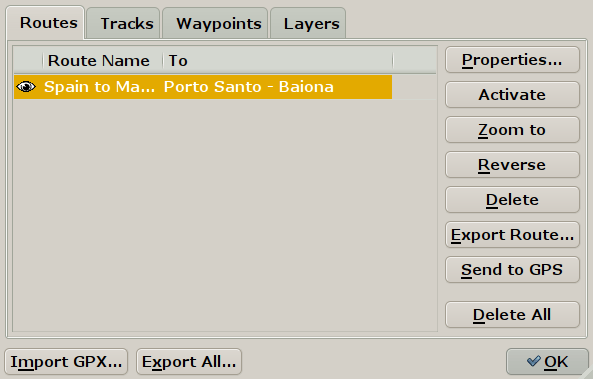
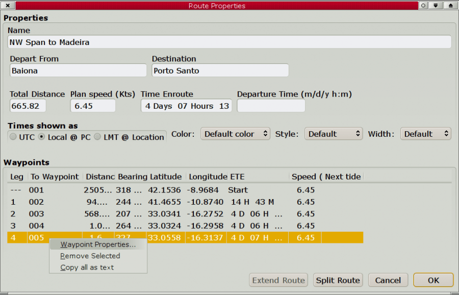
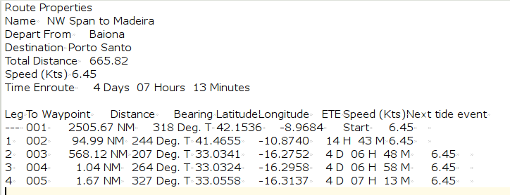
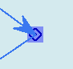
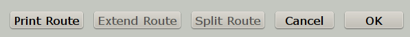
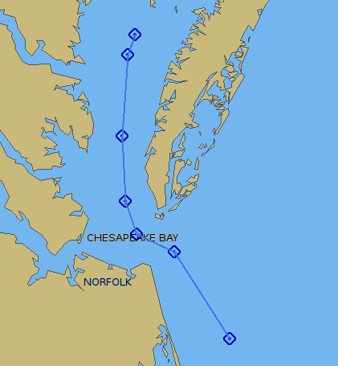
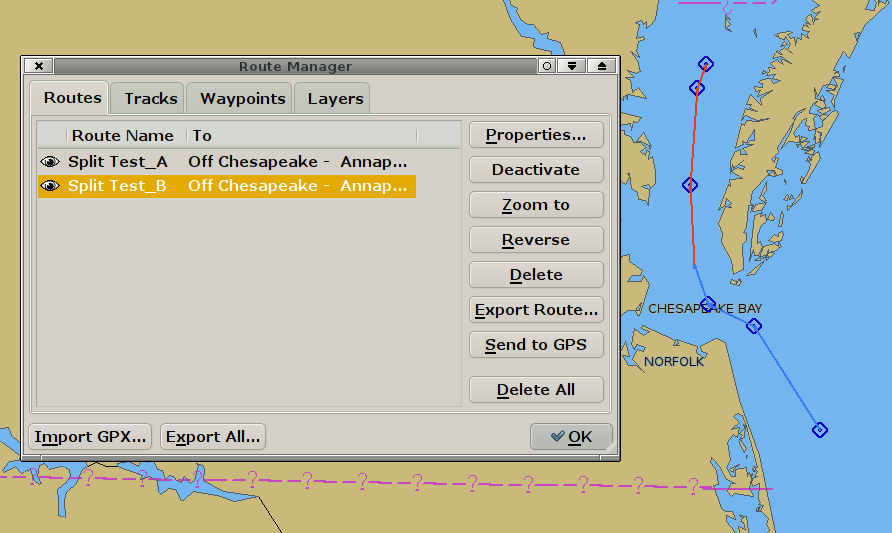
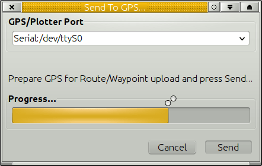
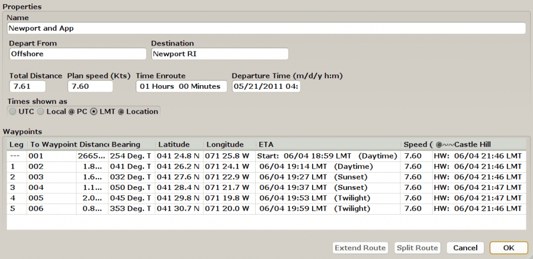
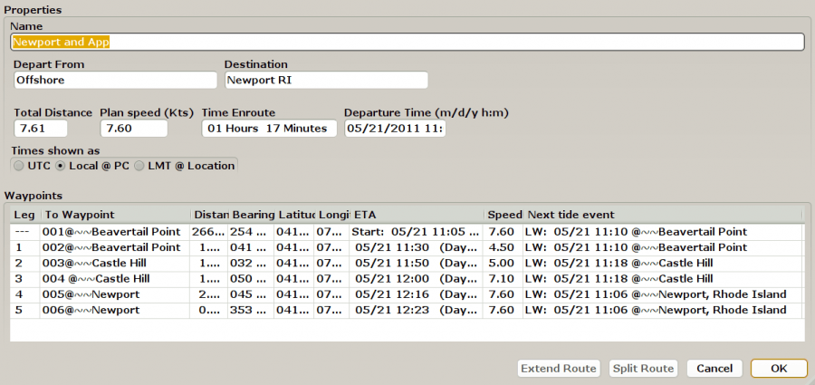

- The route points have exactly the same properties as the isolated waypoints, but does not show in the waypoint tab, to avoid clutter. To create a route that uses real waypoints, create them first and join them with the route tool.

- Click the “eye” to the far left on the line with the route to toggle if the route is displayed or hidden on the chart. A small dialog let you choose, if existing marks, included in a route, will also become invisible. When a route is turned visible, all the shared waypoints are also made visible. Once a route is deleted, such a mark will go back to be a “normal” waypoint.
- To Sort routes click “Route Name” or “To”
- Properties:This button brings up a new dialog with settings that can be changed for each route.

- Wpt 005 is right-clicked, and new dialog has popped up. The waypoint properties can be reached and edited. For example, change the default name, “005” in this case, to something more appropriate. Read more in the Extended Marks section. The waypoint can also be deleted. The last entry, “Copy all as text” copies all Route Properties for pasting into a text or Spreadsheet document.

- Plan Speed The overall planned speed for the route. The speed for each leg can be set by going to the waypoint Properties→Description tab for the waypoint that starts the leg, and write in the speed. For example ” VMG=9.7“. [Unfortunately this approach presently excludes writing descriptions for the waypoint. One or the other, be warned!] The Plan Speed value is persistent and will be used for further routes, unless changed. The default value is 6.0 knots.
- Departure Time: For Planning: With no departure time the ETE (Estimated Time En route) is calculated. Route is Inactive and normal calculation is ETE. The ETE will be calculated from the First Waypoint of the Route.

- ETA For Planning Date & Time: with Route Inactive or Active. Enter a Departure Date and Time eg: 06/07/2014 14:00 and the ETA will be calculated. Make sure to press “Enter-Return” after entering a departure time. This guarantees that the entered time is used in calculations. The ETA will be calculated from OwnShip to the first Waypoint of the Route and then for each waypoint. Note the Active Waypoint Console.

- ETA Planning Now Route can be Inactive or Active with first WP active. To enter the present time, enter ”>“ (meaning: “Now”) in the departure time box. This works provided “Time shown as” → Local@PC is selected. Press “Enter” and all the times in the “ETA” column will change. ”>“ differs from entering the same time manually, say “06/04/2016 14:23”. Distance from Ownship to first Waypoint (active) will be shown with ETA's for all waypoints in the route. Calculates departure Now from the current boat position, including the distance to the first waypoint of the route Use prior to leaving harbour, all calculations pass through the very first WP of the route and ETA is calculated from the boat position through the first waypoint and then to the end of the route. Note the Active Waypoint Console.

- ETA Planning Now from Intermediate WP If the Route is Active and an intermediate Waypoint is Active, say WP5, then ”- “>” - issued at 14:00 on 06/04/2016 - calculates departure “Now” from the current boat position, including the distance to the currently “active waypoint” of the route. Waypoints before the active waypoint are left empty.
- During Passage - Set Route “Active” Route & & time shown as “Local@PC”. If you are simulating this condition you may need to right click on the next WP and pick “Active”. On an ocean passage, after a week of sailing, calculate ETA to the following WP. Set the route as “active” & next WP as “active”. Then, when entering “>”=“now” as Departure Time, all the ETAs are from your real position TO THE NEXT WP, not to the beginning of the route. The ETA to the active waypoint is from Ownship to the WP. Note the Active Waypoint Console.

- Times shown as: UTC is a new name for GMT. LMT is a local mean time based on the present longitude. For Local Zone Time one can also enter the keyword “now”.
- Color: Set the displayed color of the track or keep the default.
- Style: Solid, dashes, dots, a combination or keep the default.
- Width: Set the width of the track or keep or keep the default.
- Marking a line with the leg number and the destination Waypoint in the Properties Dialog also marks the Waypoint on the chart with a blue square.


The lower part of the Route properties dialog now has a Print Route button. It is possible to first select what features to print before being sent to the normal print routine.
- Extend Route:Extending is possible only when it is obvious, what should be joined with the current route (current=visible in the Dialog). Eligible are all visible route points shared with, or lying nearby to the current route's endpoint. If there is exactly 1 such point, then it is considered obvious, and the Extend button is enabled. If there are more, some should be hidden before proceeding, until just 1 remains.
- Routes are extended forward, based on the geographic location, next route point must be very near, as when mouse-extending the route. If the next route point is to far away for extending, just create the joining leg and extend twice.
- Split Route: For splitting, the split point is selected as the row in the listing. The point-of-split becomes part of both new routes (shared) or tracks (cloned). Original route-track is deleted.
- Here is a basic example of first splitting then extending. The test route is shown below *

- Split Test_A In the Route Managers property dialog for the route we have selected a waypoint where we would like to split the route. The “Split Test” Route now consists of two parts, that has been renamed. *

- Next we extend the first leg “Split Test_A” with the second leg “Split Test_B”. This extended route is now named “Split Test_B_plus.
- Activate-Deactivate: Activates-Deactivates a route marked in the left part of the window. * Zoom to: Zooms in on a route marked in the left part of the window. * Reverse: Reverses a selected route. It's possible to cancel the reverse operation through a confirmation dialog. * Delete: Deletes selected route or track. Use the Shift key to mark multiple routes for deletion. This also work in the other Route manager tabs. * Export Route: Save the route on your computer for later use (import) * Send to GPS. Send the Route to your GPS. Pressing the button activates a dialog were an output port is selected. This port does not have to be listed in “Connections” as it is an independent feature. This choice also appears in the right click menu for routes and waypoints. For Garmin Users, make sure that the ToolBox→GPS→”Use Garmin GRMN-GRMN (Host) mode for Waypoint and Route uploads“ box is ticked. The reason for this is that Garmin units cannot accept route uploads via NMEA0183. This is a “design feature” of all Garmin receivers. *

- Delete All. Be careful. If you know you have saved the routes on your computer and are able to import the again, this is a simple way to clear the screen from routes. Better be safe than sorry, so save before deleting, if you want to be able to use the routes again.
- Import. Import one or more previously saved Routes, or Routes from other gpx compatible applications. It is possible to select and import multiple routes. The default waypoint icon bitmap is a circle. This kicks in if the icon in the imported gpx-file is not recognized. * Export All, now called “Export All Visible…” Saves all visible routes, waypoints and layers, in one gpx file. This is done through a normal file saving dialog. * If a Tidal Height Curve Dialog, for an individual tidal station is shown on the screen, the tidal situation for this station will be tabulated along all route points in the route properties dialog. It is essential to enter a departure time and a planned speed. Once “Enter” is pressed the tidal column will show the nearest High or Low water considering the ETA at each waypoint.


- If no tide dialog for any station is open and a waypoints name contains the string @~~<name>, for example ”@~~York Spit Light“, then the tide report for the closest station with matching name is shown in the tide column for this waypoint. The most appropriate tidal station for each waypoint can thus be selected.
- When entering a departure time the ETA, Expected Time of Arrival will be shown, instead of ETE, Expected Time En-route.
- The individual waypoints “Description” field can contain the setting of planned speed specific just to the next route leg (e.g. “VMG=4.5;”) and-or the specification of Estimated Time of Departure from this waypoint (e.g. ” ETD=2/14/2011 12:00;“), allowing for planning extended stopovers. Time can be specified as UT, LMT or local zone time at the PC (default).
